Es un postre a base de guayaba muy comun en ECUADOR
Batir claras de huevo con azúcar,
pulpa concentrada de guayaba hasta obtener una crema.
Servir en conos de helado y añdir decoracion
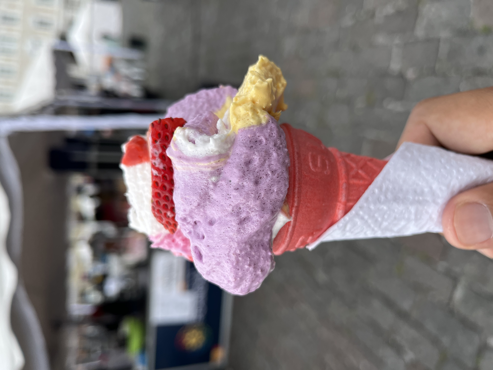
Hacer un corte en cruz en unos higos y cocinarlos en fuego bajo con canela y acompañarlos con dulce de leche
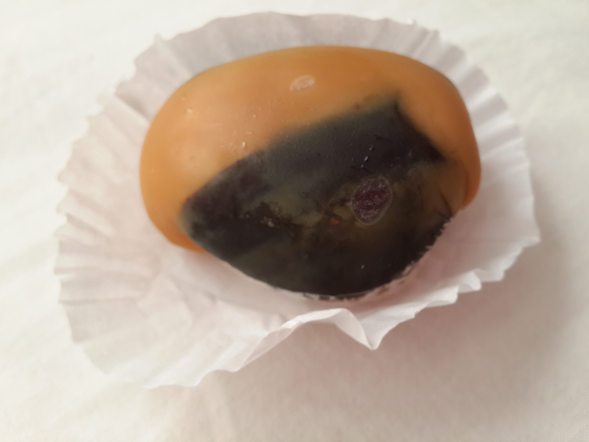
Es una variante del flan, que se hace con leche condensada, huevos, ron y caramelo y tiene una textura cremosa
.jpg)
Es un postre con una base de manjar blanco que es dulce de leche concentrado y cubierto de merenge y canela, se sirve en un vaso o copa

Son dos galletas unidas por un relleno de dulce que varia su tamaño y se bañan mayormente en chocolate o azucar glass
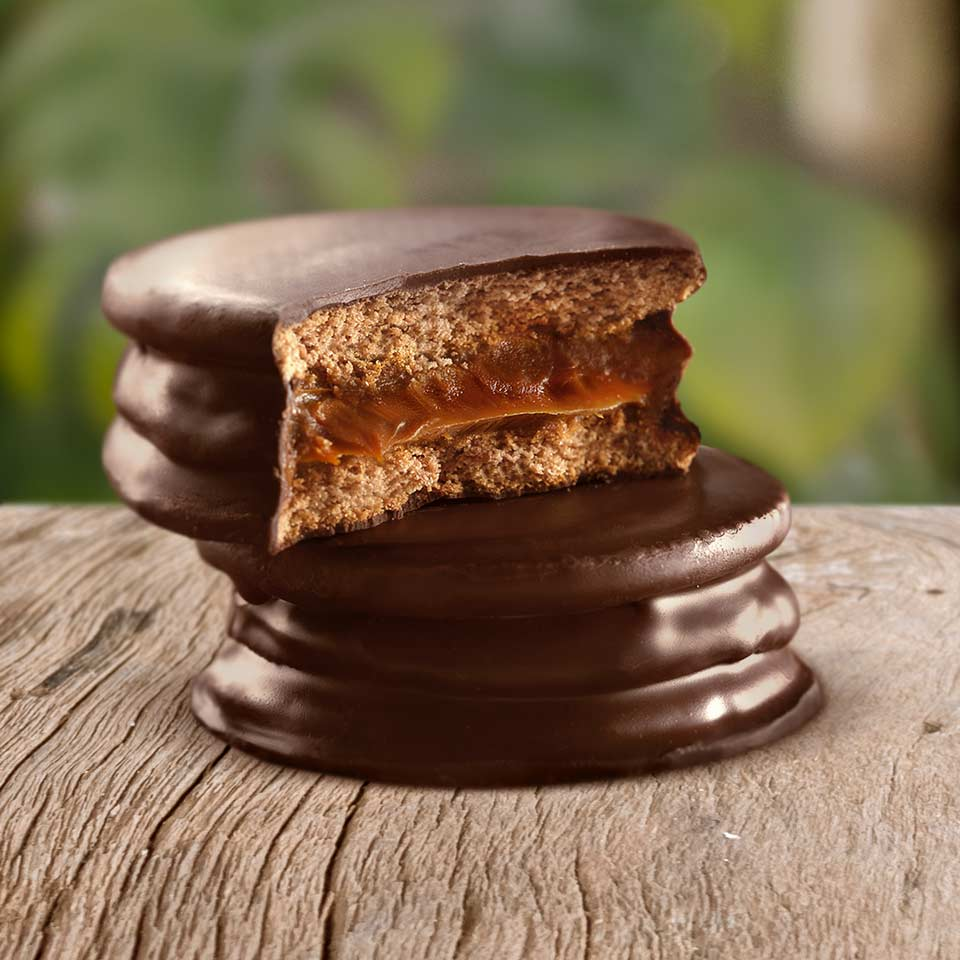
Son masas fritas en forma de rectangulo inflado que suelen servirse con azucar glass por encima, miel o ambos
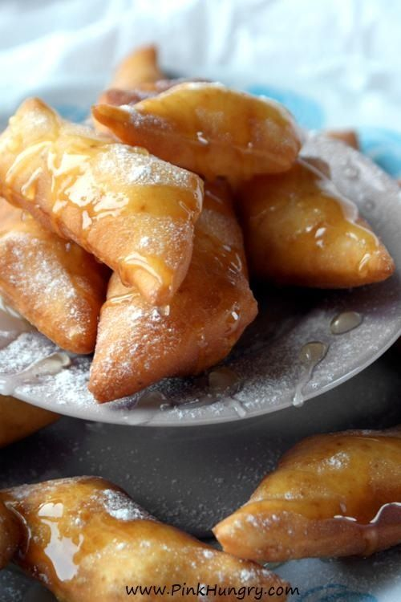
Es una trufa de leche condensada, mantequilla y cacao con chocolate granulado por su exterior
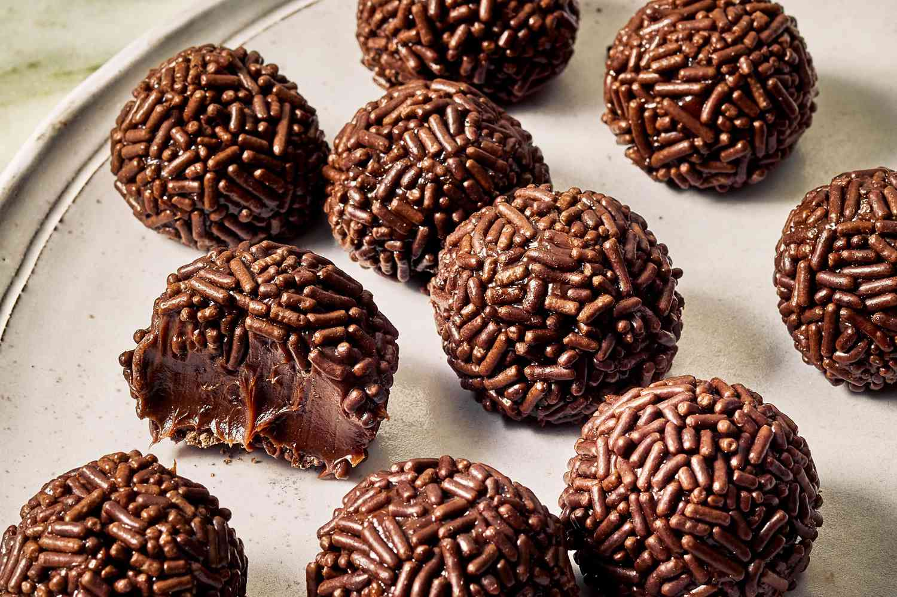
Es una bebida y postre de mote cocinado y duraznos desidratados llamados huesillos en canela
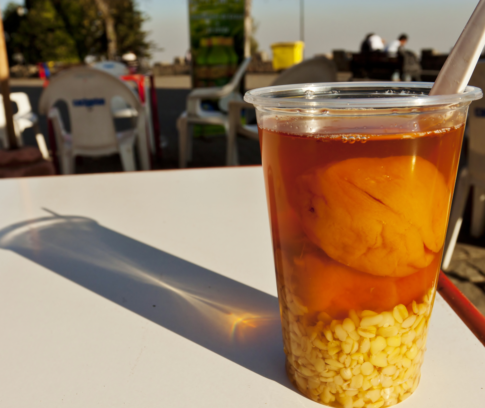
Es un postre indigena a base de maiz con leche, azucar y un toque de miel y canela
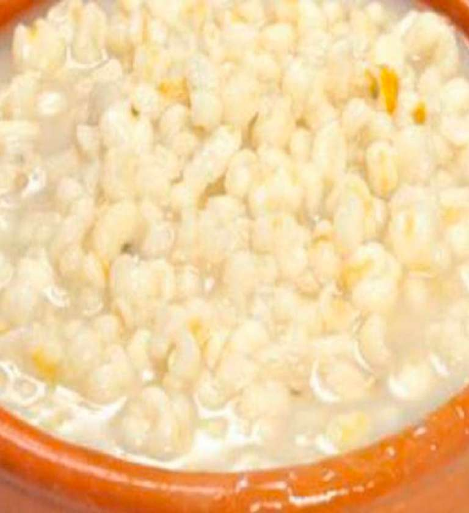
Es un pastel con capas de merengue crujiente,dulce de leche,cremabatida y duraznos
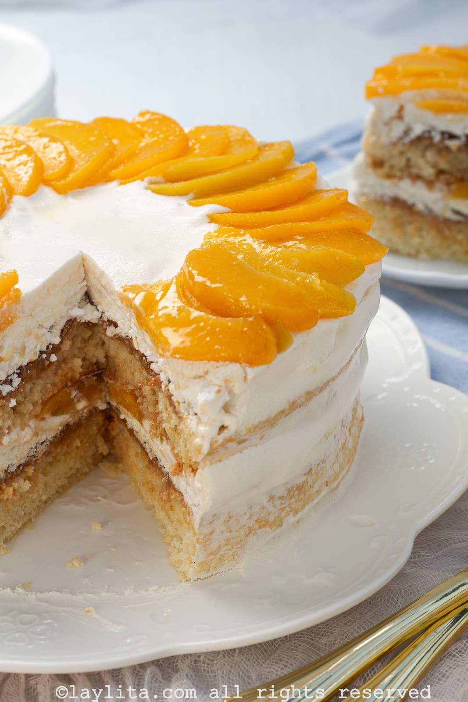
Son pasteles lenos de mantequilla,azucar,huevos y aveces nueces o pasas, y tienes un centro suave y corteza crujiente
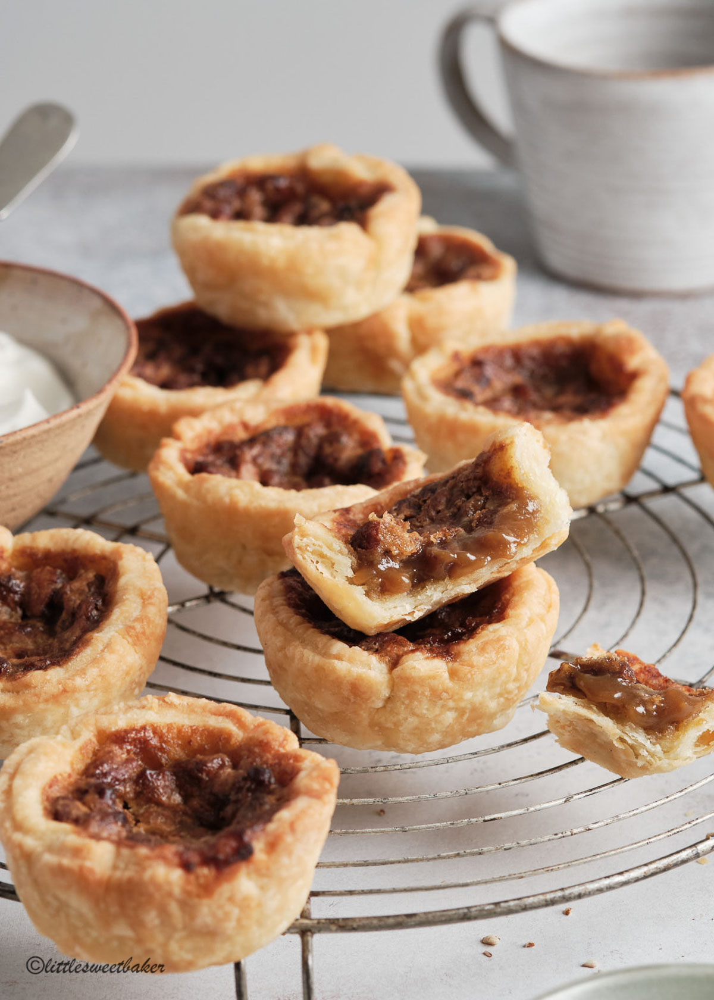
Pie de manzana sazonada con canela azucar y nuez moscada y formas en su superior como linas entrecruzadas y puede ser acompañado con helado
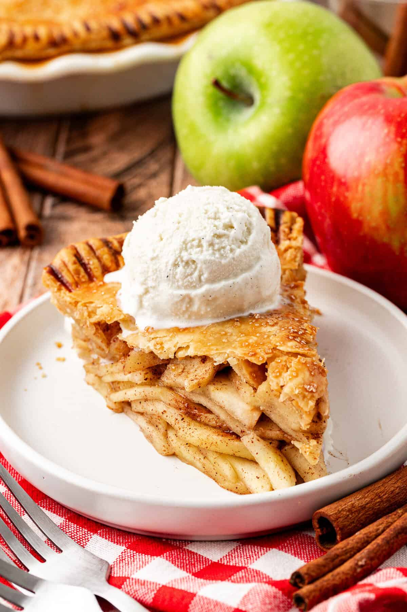
Bizcocho bañado en tres leches que son la leche evaporada, leche condensada y crema.Cubierto de merengue
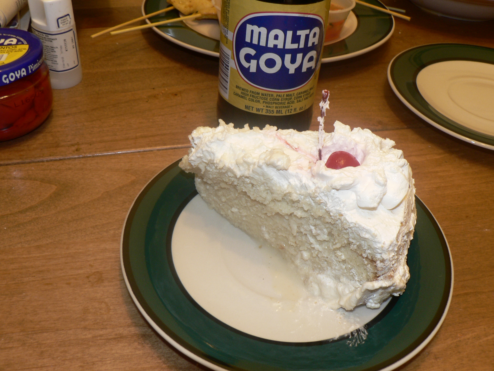
Lazos de masa frita en forma de estrella crujiente que se sirven con chocolate o manjar
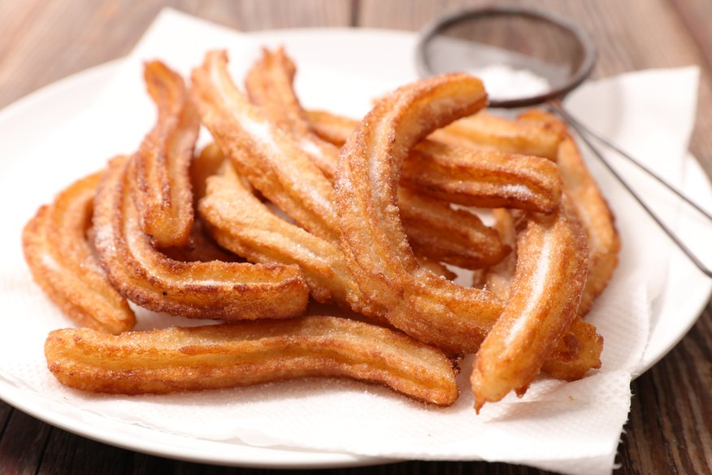
Beñuelos fritos a base de queso rumani y servidos con nata y mermelada de mora o frutos rojos
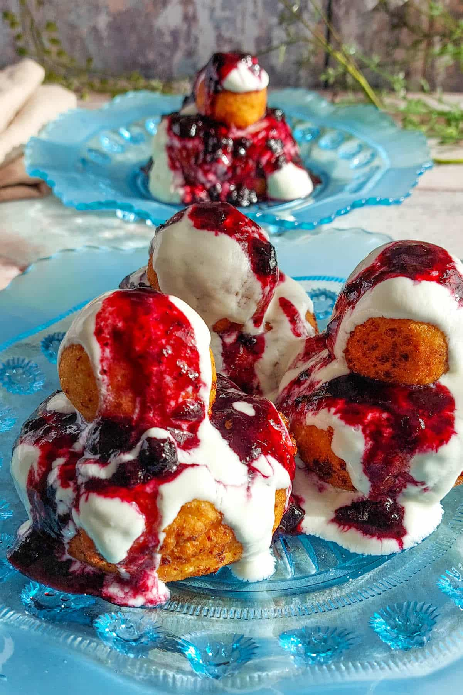
Pastel tradicional de manzana con especias como clavo de olor y canela servida con crema de whisky

Bizcocjos de chocolate en capas con cerezas,nata y un licor de cereza tradicional
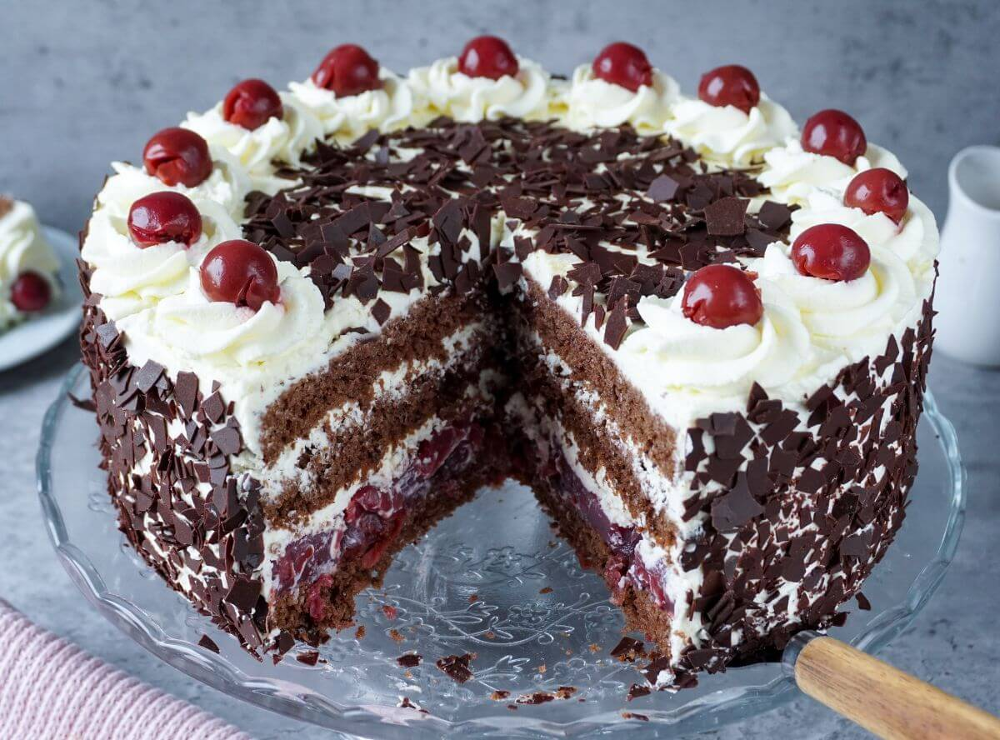
El tiramisu es unos bizcochos alternados con queso marcapone y licor con un expresso